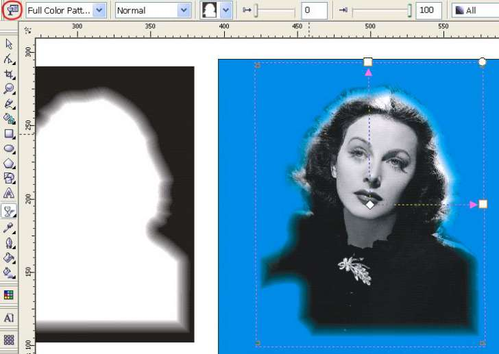
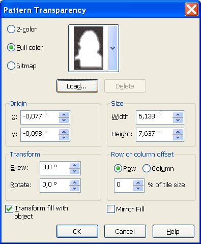

Создание векторной маски прозрачности в Corel Draw
Кое кто говорит, что работа с прозрачностями в Corel Draw очень убога, мол, в иллюстраторе можно применять по несколько масок прозрачности на один объект и, тем самым, задавать выборочную прозрачность прозрачность определенным местам изображения. А в кореле, якобы, хоть и больше разных методов прозрачностей, форму регулировать нельзя - в лучшем случае, градиентом от края к краю. Меня это настолько заело, что я решил сделать свой собственный урок, как сделать в кореле векторную маску прозрачности произвольной формы и применить ее на объект. В принципе, тут уже описывалось, как такое сделать в PhotoPaint, я покажу, как это сделать для векторного изображения в самом Corel Draw. Предположим, у нас есть некое изображение (для наглядности, пусть это будет фотография)
Мы хотим обрезать его по контуру и сделать, чтобы оно сходило на нет до полной прозрачности ближе к краям.
Для начала, создадим маску прозрачности для изображения. Для этого, обведем его по границе:
Затем при помощи инструмента Interactive Contour Tool создаем маску изображения с нужным количеством шагов. Белый цвет на ней - полная непрозрачность, а соответственно черный - прозрачный фон:
Далее, сохраняем полученную маску в отдельный CDR файл. Наводим курсор на фотографию и выбираем Interactive Tranparency Tool (рюмка). В опции Transparency Type выбираем Full color pattern, затем выставляем настройки (обведены красным):

В настройках жмем на Load и выбираем CDR файл, в который мы сохранили маску прозрачности. В Origin и Transform- нули, флажок Transform fill with object установлен. В Size надо вбить точные размеры исходного изображения.

Применяем полученные настройки и получаем изображение.
Санчес, что у тебя за движок, картинки не прикрепились и редактировать сообщение не дает. :-(Все ok можешь это сообщение удалить. ;)